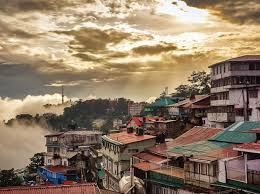

Shimla
Snow-capped Himalayan peaks and green pastures surround Shimla, the capital of Himachal Pradesh. Enjoy a heritage walk through Shimla’s Victorian-era architecture, labyrinthine bazaars and lengthy pedestrian shopping mall.
Shimla offers much more than charming colonial buildings against a backdrop of the magnificent snow-capped Himalayas. Much more than the dozens of Bollywood songs set on Mall Road or its oldest boarding schools. The upper reaches around the Shimla region offer skating on natural ice as well as host the MTB Himalaya (South East Asia’s biggest mountain biking race). Shimla also boasts ownership of the 16th century “Arya Astha Sahasrikas Prajna Paramita” Tibetan script (at the quaint Maria Brothers antique booksellers) and the Jakhu Temple Shrine with Lord Hanuman’s footprints.
Lush green hills mark summer in Kufri– a stark contrast to the fantastic snow slopes that make tobogganing ‘the’ thing to do at the end of the year. If you’re visiting in January, try your hand at the ‘National Snow Statue Competition’ here in Kufri. A short walk around would take you past colonial-Esque statues at Chini Bungalow to the Himalayan nature park.
How to reach Shimla :
By air :
Pantnagar airport, about 81 km away from Ramnagar towards the south, is the nearest airport through which you are easily reachable or connected to big cities like Delhi. From here you can hire a local guide or local taxi driver for reaching Ramnagar, or you can hire a cab online too.By road :
State buses and private buses or a local taxi which will connect you to Nanital, Kasauni to Mukteshwar, and the other option are your personal vehicle whether it’s a car or two-wheeler you can have access towards Nanital and Ramnagar.